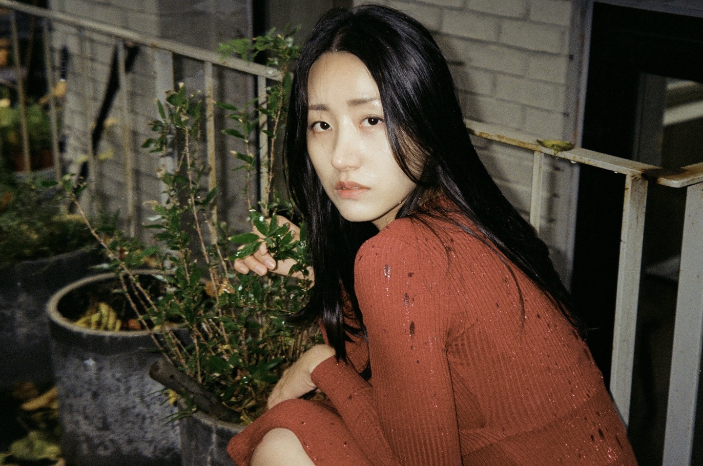
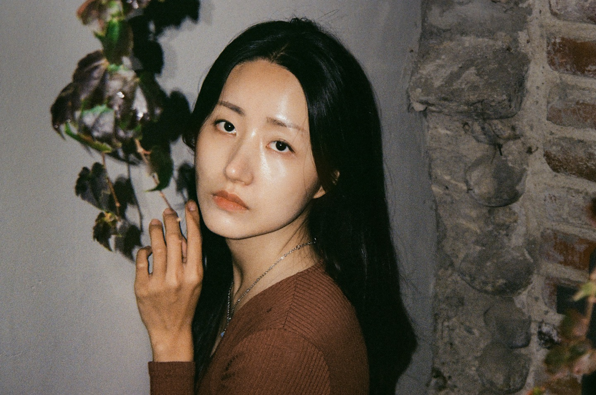

Drama
2024 KBS2 <미녀와 순정남>2024 SBS <굿파트너>
2023 디즈니플러스 <사운드트랙 #2>
2022 쿠팡플레이 <미끼>
2022 ENA <보라데보라>
2022 MBC <조선변호사> (고정출연)
2022 KBS1 <으라차차 내인생>
2022 KBS2 <붉은단심>
2022 KBS2 <황금가면>
2022 KBS2 <사랑의 꽈배기>
2022 카카오TV <그녀의 버킷리스트>
2022 디즈니 플러스 <키스식스센스> (고정출연)
2021 MBC <옷소매 붉은 끝동>
2021 SBS <모범택시>
2021 TVN <여신강림>
2020 KBS2 <비밀의 남자>
2020 웹드라마 <연애혁명> (조단역)
Film
2022 단편 <인류가 행복해지는 법> 주연 2021 단편 <누가 더 그루비> 주연
2020 단편 <너를 생각하며> 조연
2020 단편 <사이> 혜련 역 (영진위 제작지원)
2017 단편 <부화> 주연
2017 단편 <공포의 집> 주연
Play
2024 낭독극 <순례네 국밥> 동이 역 2024 연극 <순례네 국밥> 동이 역
2024 연극 <숙녀들의 예의범절> 노리코 역
2023 연극 <순례네 국밥> 미옥 역
CF
2023 <국립특수교육원 온라인 교육영상>2022 <더마소드> 피부전문의 역
2022 <나무엔 구름 블랑켓>
2022 <케이드림간호학원> 간호학원 학생 역
2021 <행정안전부 재난대처 영상> 주인공 여 역
2021 <전동킥보드 안전교육 영상> 킥보드 여 역
2021 <코아스 브랜드 필름> 고객사A역
2021 <맛동 홍보영상> 진행 mc
2021 <나무엔 3D 베개, 베개커버> 제품설명 사진 모델
2020 <장애인 재난 대처 요령 공익광고> 시각장애인 아내역
2018 <해피클린> 주연